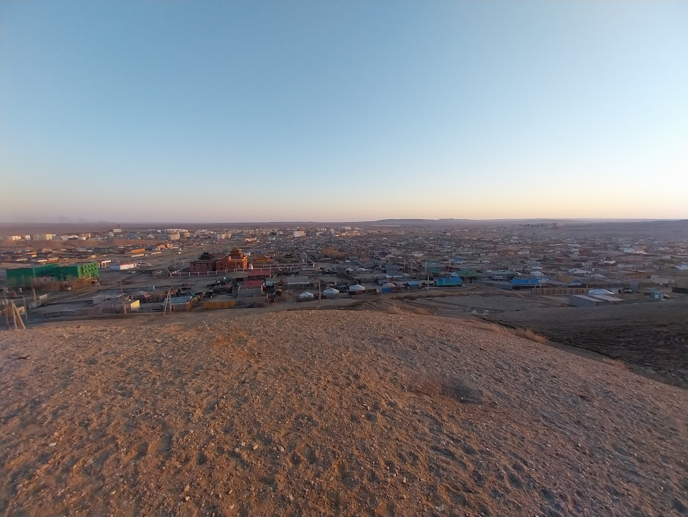
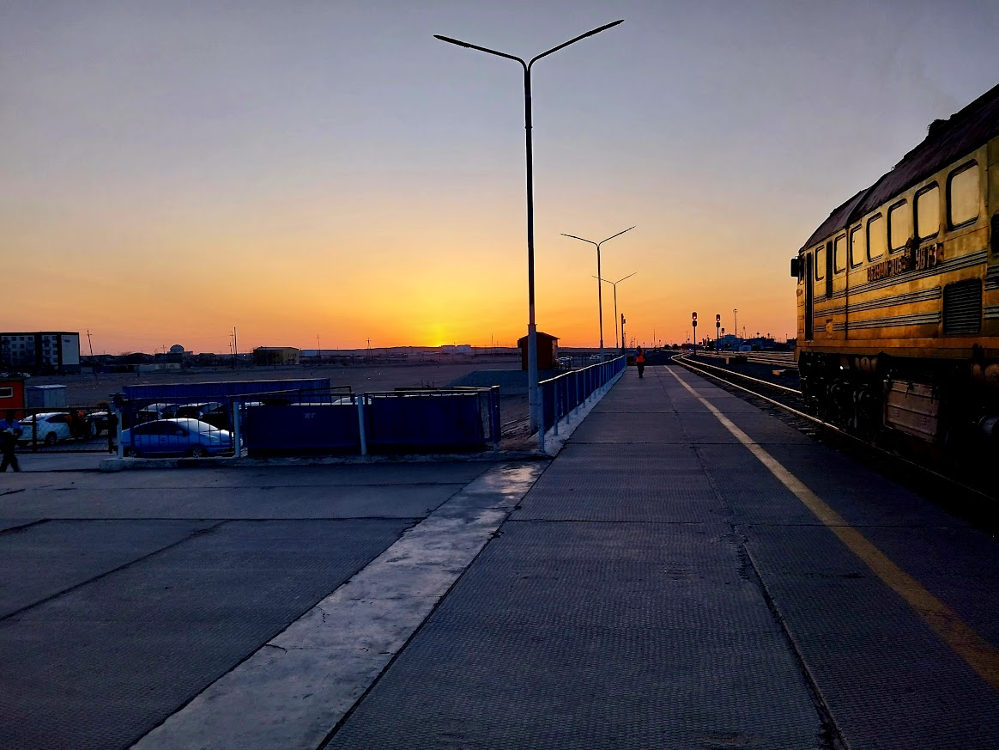

Sainshand, also called "Shand" by locals, is located in the eastern gobi province. It is very dusty here and occasionally gets sandstorms.

There is a hill that seperates half of the town. It also holds a memorial.
To get to sainshand, most people take the train from the city. It is about a 12 hour train ride so it is common to go throughout the night.

Outside of the town is pretty empty. There are some mountains far off in the distance, but everything nearby is empty.